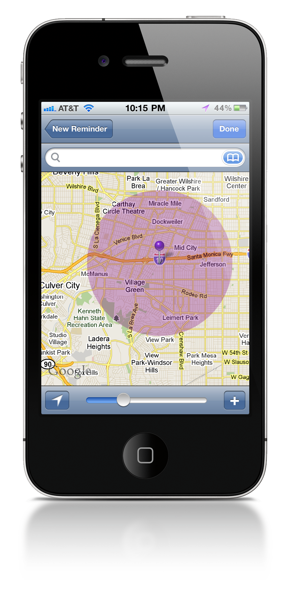

Regions for iPhone
Regions for iPhone is a simple app that reminds you to do things based on where you are.
How simple is it?
- Create a new reminder
- Pick a location from the map
- That's it.
The next time you are roughly near the purple region, you will recieve a notification reminding
you of whatever it is that you need to do.
You have the ability to specify how close you should be before recieving
the reminder. Regions doesn't use GPS in the background, which means that you shouldn't
notice any significant reduction in battery life.
- Extremely low power consumption
- Address Book Integration
- Google Address geocoding
- Specify the distance from your point of interest
Regions is under development. If you are interested in gaining access to the beta version,
simply create an
account.
Regions requires iPhone 4.